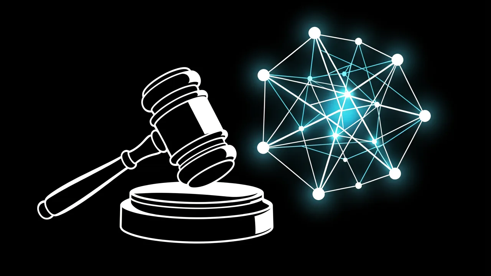

马斯克反垄断诉讼中，苹果公司和 OpenAI 所面临的法律挑战呈现出截然不同的发展趋势。
本文分析了苹果公司近期在整合策略上的调整，以及这些调整如何使其在法律层面上与埃隆·马斯克与 OpenAI 之间的持续诉讼分离开来。

注册一个免费的 DeepSage 账户，以便保存文章、跟踪测试结果，并第一时间获取每日简报。
- Musk is shifting focus from Apple to OpenAI.
- Apple's integration strategy avoids direct antitrust liability.
- OpenAI faces scrutiny over its non-profit mission drift.
- The legal battle tests existing antitrust frameworks for AI.
一家大型硬件合作伙伴的战略性退出，是否会从根本上改变反垄断调查的法律环境？这个问题是目前埃隆·马斯克、苹果公司和 OpenAI 之间紧张关系的核心。最近，马斯克对苹果公司的态度有所缓和，但这与他继续对 OpenAI 的公司结构采取强硬的法律手段形成了鲜明对比。

1. 苹果与 OpenAI 的关系逐渐疏远
在过去的几个月里，苹果生态系统与 OpenAI 大型语言模型（LLM）的结合，一直是马斯克批评的主要焦点。他认为，ChatGPT 与苹果操作系统之间深度融合，代表着一家大型硬件提供商与一家大型人工智能开发商之间存在着危险程度的合谋。然而，近期言论的变化表明，双方正在进行战略性地脱钩。虽然苹果公司巧妙地处理了人工智能功能整合的复杂问题，以避免直接违反反垄断法，但 OpenAI 仍然是马斯克法律行动的主要目标。

这种区分至关重要，因为它突显了不同类型的企业合作关系所面临的审查程度各不相同。苹果公司的整合战略侧重于…… 设备端处理和保护隐私的层级这使得主张存在一个统一的、具有反竞争性质的垄断行为变得更加复杂。相比之下，OpenAI与马斯克之间的关系主要集中在他们就OpenAI最初的非营利使命是否被违反的问题上存在争议。
2. 反垄断论证的机制
马斯克的法律策略依赖于这样的前提：苹果公司与OpenAI之间的合作关系，为其他竞争者构成了进入市场的障碍。其论点是，通过预装或深度集成OpenAI的模型，苹果公司实际上利用其市场力量来抑制其他大型语言模型（LLM）提供商的增长。
要了解这些实体所面临的压力，我们必须考察市场影响力是如何发挥作用的：
- 硬件主导地位：苹果公司控制着用户访问的入口。
- 模型整合：OpenAI 提供智能层。
- 数据反馈循环：用户的互动行为优化模型，从而产生一种良性循环效应。
- 竞争排斥：较小的开发者缺乏足够的渠道来与整合后的功能竞争。
马斯克的法律关注点已从苹果公司的整合策略转移，现在集中于OpenAI公司的组织结构。
尽管苹果公司已经找到了方法，将这些整合措施定位为以用户为中心的改进，而非排斥竞争对手的策略，但对 OpenAI 的法律压力依然存在。这是因为针对 OpenAI 的诉讼不仅仅是关于市场份额的问题，更关乎根本性的问题。 公司治理结构的转型 从一家非营利组织转变为一家采用封闭源代码、以盈利为导向的实体。
3. 对人工智能生态系统的影响
这些法律纠纷的走向表明，人工智能的未来发展可能会呈现出两种截然不同的模式。如果苹果公司成功地维护其集成方法，我们可以预见，人工智能的应用将会朝着……方向发展。 针对特定平台的 AI 优化 目前的做法更有利于那些实力雄厚的企业。但是，如果人们对 OpenAI 的公司结构进行更严格的审查，可能会促使其对人工智能公司如何平衡其自身利益与公众使命进行重大调整。
针对 OpenAI 的诉讼的核心问题在于，它从一个非营利性机构转变为一个以盈利为目的的商业模式。
这场法律纠纷实际上是对该行业的一种监管压力测试。它检验了现有的反垄断框架是否能够应对生成式人工智能以及神经网络与消费者硬件深度融合所带来的复杂问题。这些框架最初是为更为简单的软件生态系统设计的。
摘要
虽然埃隆·马斯克已经大大减少了对苹果公司在人工智能领域中所扮演角色的关注，但OpenAI目前面临的法律挑战依然严峻。两者之间的区别在于索赔的性质：苹果公司是在维护其在生态系统中整合软件的权利，而OpenAI是在捍卫其基本的组织身份，以应对对其偏离既定目标和违反合同的指控。
- Antitrust
- Regulations intended to promote fair competition by preventing monopolies and unfair business practices.
- LLM
- Large Language Model; an AI trained on vast amounts of text to understand and generate human-like language.
注册一个免费的 DeepSage 账户，以便保存文章、跟踪测试结果，并第一时间获取每日简报。